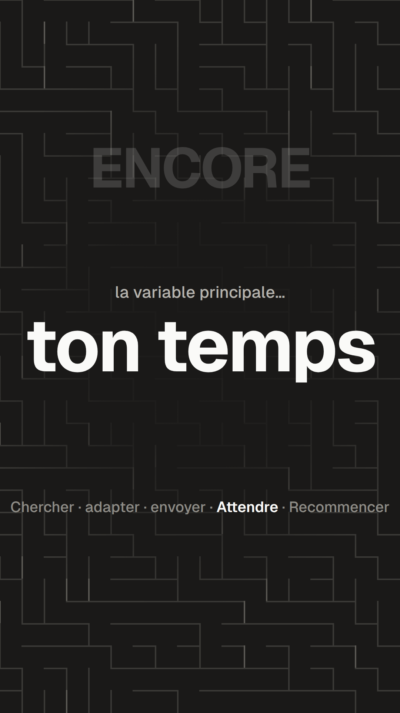
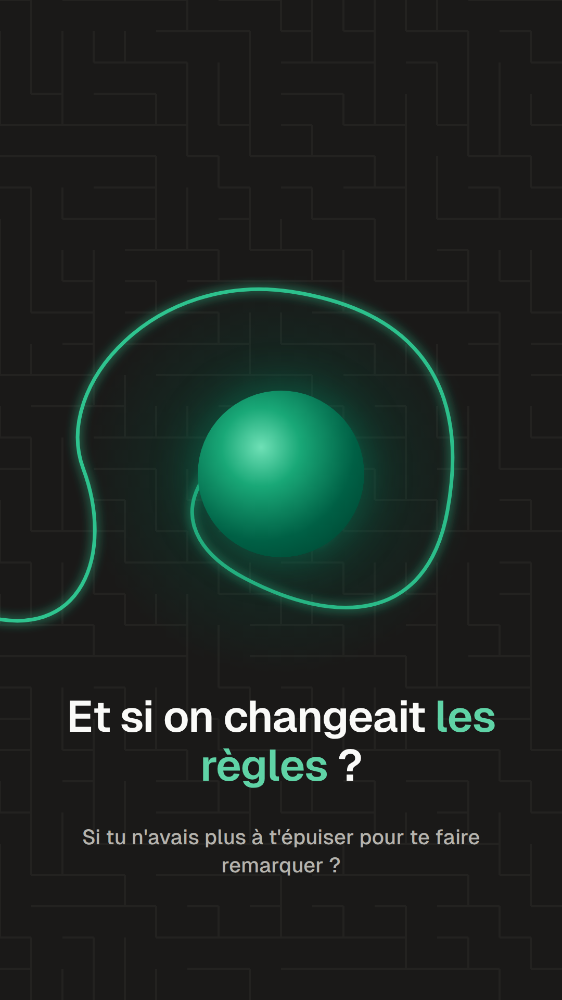
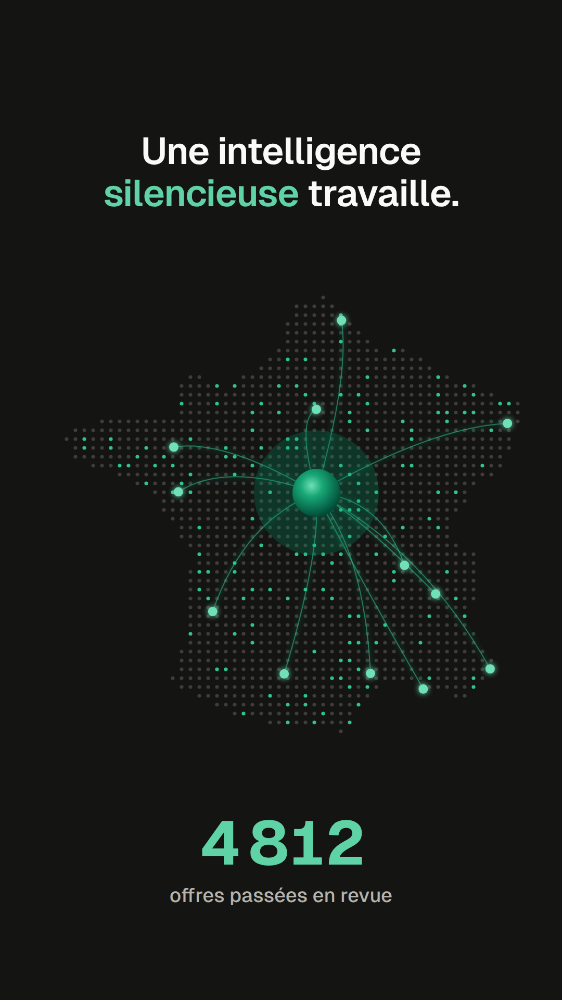
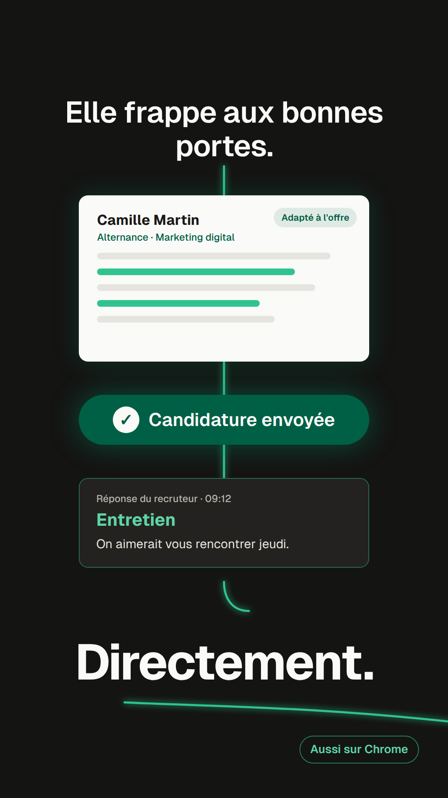
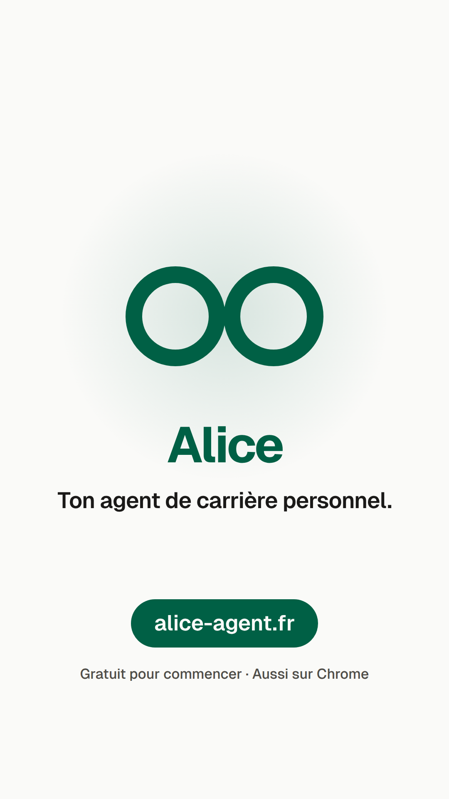

Acte 1 · Aliénation

01: La boucle
0 – 10,5 s
« Chercher, adapter, envoyer. Attendre. Recommencer… c'est ton temps. »
Le labyrinthe se referme sur un battement qui accélère ; les mots claquent.
Acte 2 · Rupture

02: La rupture
10,5 – 20 s
« Et si on changeait les règles ? »
Coupure nette sur sub-basse ; la ligne verte brise la grille et s'enroule autour de la sphère.
Acte 3 · Déploiement

03: Le déploiement
20 – 28,5 s
« …une intelligence silencieuse travaille. Elle navigue, filtre… »
Les liens partent vers les villes ; le compteur défile.

04: La preuve
28,5 – 36 s
« …et frappe aux bonnes portes. Directement. »
Trois éclairs : CV adapté, envoi, réponse. Le fil sort du cadre vers Chrome.
Acte 4 · Résolution

05: La résolution
36 – 45 s
« Ne cherche plus. Laisse les opportunités venir à toi. »
Les particules forment les deux anneaux ; passage au clair, carte de fin tenue.